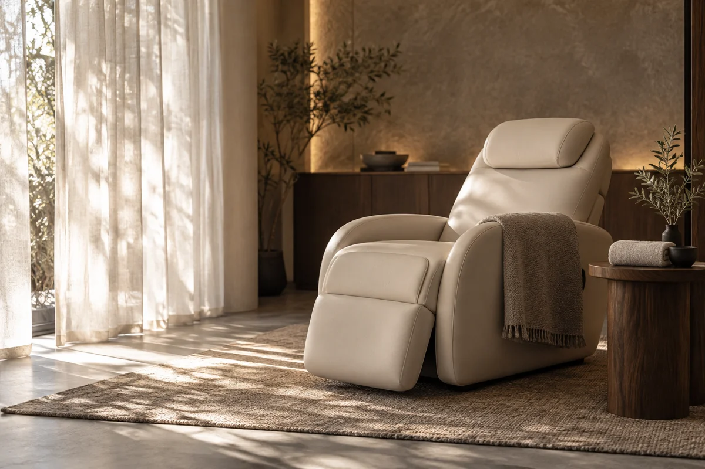

余白のヘッドスパ
カウンセリングからお帰りまで、
自分のペースで過ごす定番コース。
60分¥6,600
CONCEPT WORK / 01 / LANDING PAGE
架空のドライヘッドスパ「YOHaku」を題材にしたLPサンプルです。雰囲気だけでなく、初めての方が予約前に知りたい情報まで設計しました。
SNSで興味を持っても、料金や施術の流れがわからず、予約をためらってしまう。
落ち着いた世界観と、料金・所要時間・来店の流れを一つのページに整理。
構成・文章・画像制作・スマホ対応ページの実装。予約システム連携は別途ご相談。
以下は架空店舗のサンプルです。料金・メニューはデザイン用の設定で、実際の予約は受け付けていません。

業種・目的・今ある素材を教えてください。構成から一緒に考えます。